Salon of 1846
On Landscape
Du paysage
Dans le paysage, comme dans le portrait et le tableau d’histoire, on peut établir des classifications basées sur les méthodes différentes : ainsi il y a des paysagistes coloristes, des paysagistes dessinateurs et des imaginatifs ; des naturalistes idéalisant à leur insu, et des sectaires du poncif, qui s’adonnent à un genre particulier et étrange, qui s’appelle le Paysage historique.
In landscape, as in portraiture and history painting, classifications may be established according to different methods: there are colorist landscapists, draughtsman-landscapists, and imaginative landscapists; naturalists who idealize without knowing it, and sectarians of convention who devote themselves to a peculiar and strange genre called historical landscape.
Lors de la révolution romantique, les paysagistes, à l’exemple des plus célèbres Flamands, s’adonnèrent exclusivement à l’étude de la nature ; ce fut ce qui les sauva et donna un éclat particulier à l’école du paysage moderne. Leur talent consista surtout dans une adoration éternelle de l’œuvre visible, sous tous ses aspects et dans tous ses détails.
At the time of the Romantic revolution, landscapists, following the example of the most celebrated Flemings, devoted themselves exclusively to the study of nature; this was what saved them and gave the modern school of landscape its special brilliance. Their talent consisted above all in a perpetual adoration of the visible work, in all its aspects and all its details.
D’autres, plus philosophes et plus raisonneurs, s’occupèrent surtout du style, c’est-à-dire de l’harmonie des lignes principales, de l’architecture de la nature.
Others, more philosophical and reasoning, concerned themselves chiefly with style—that is, with the harmony of the principal lines, the architecture of nature.
Quant au paysage de fantaisie, qui est l’expression de la rêverie humaine, l’égoïsme humain substitué à la nature, il fut peu cultivé. Ce genre singulier, dont Rembrandt, Rubens, Watteau et quelques livres d’étrennes anglais offrent les meilleurs exemples, et qui est en petit l’analogue des belles décorations de l’Opéra, représente le besoin naturel du merveilleux. C’est l’imagination du dessin importée dans le paysage : jardins fabuleux, horizons immenses, cours d’eau plus limpides qu’il n’est naturel, et coulant en dépit des lois de la topographie, rochers gigantesques construits dans des proportions idéales, brumes flottantes comme un rêve. Le paysage de fantaisie a eu chez nous peu d’enthousiastes, soit qu’il fût un fruit peu français, soit que l’école eût avant tout besoin de se retremper dans les sources purement naturelles.
As for fantastic landscape, which is the expression of human reverie, human egoism substituted for nature, it was little cultivated. This singular genre, of which Rembrandt, Rubens, Watteau, and certain English gift books offer the best examples, and which on a small scale is analogous to the beautiful decorations of the Opera, represents the natural need for the marvelous. It is the imagination of drawing imported into landscape: fabulous gardens, immense horizons, streams clearer than nature allows and flowing in defiance of the laws of topography, gigantic rocks built in ideal proportions, mists floating like a dream. Fantastic landscape has had few enthusiasts among us, whether because it was a fruit not very French in character, or because the school first needed to refresh itself at purely natural sources.
Quant au paysage historique, dont je veux dire quelques mots en manière d’office pour les morts, il n’est ni la libre fantaisie, ni l’admirable servilisme des naturalistes : c’est la morale appliquée à la nature.
As for historical landscape, about which I want to say a few words by way of a funeral service for the dead, it is neither free fantasy nor the admirable servility of the naturalists: it is morality applied to nature.
Quelle contradiction et quelle monstruosité ! La nature n’a d’autre morale que le fait, parce qu’elle est la morale elle-même : et néanmoins il s’agit de la reconstruire et de l’ordonner d’après des règles plus saines et plus pures, règles qui ne se trouvent pas dans le pur enthousiasme de l’idéal, mais dans des codes bizarres que les adeptes ne montrent à personne.
What a contradiction and what a monstrosity! Nature has no morality other than fact, because it is morality itself; and nevertheless the task is to reconstruct and arrange it according to healthier and purer rules—rules found not in the pure enthusiasm of the ideal but in bizarre codes that the adepts show to no one.
Ainsi la tragédie, — ce genre oublié des hommes, et dont on ne retrouve quelques échantillons qu’à la Comédie-Française, le théâtre le plus désert de l’univers, — la tragédie consiste à découper certains patrons éternels, qui sont l’amour, la haine, l’amour filial, l’ambition, etc., et, suspendus à des fils, de les faire marcher, saluer, s’asseoir et parler d’après une étiquette mystérieuse et sacrée. Jamais, même à grand renfort de coins et de maillets, vous ne ferez entrer dans la cervelle d’un poëte tragique l’idée de l’infinie variété, et même en le frappant ou en le tuant, vous ne lui persuaderez pas qu’il faut différentes morales. Avez-vous jamais vu boire et manger des personnes tragiques ? Il est évident que ces gens-là se sont fait la morale à l’endroit des besoins naturels et qu’ils ont créé leur tempérament, au lieu que la plupart des hommes subissent le leur. J’ai entendu dire à un poëte ordinaire de la Comédie-Française que les romans de Balzac lui serraient le cœur et lui inspiraient du dégoût ; que, pour son compte, il ne concevait pas que des amoureux vécussent d’autre chose que du parfum des fleurs et des pleurs de l’aurore. Il serait temps, ce me semble, que le gouvernement s’en mêlât ; car si les hommes de lettres, qui ont chacun leur rêve et leur labeur, et pour qui le dimanche n’existe pas, échappent naturellement à la tragédie, il est un certain nombre de gens à qui l’on a persuadé que la Comédie-Française était le sanctuaire de l’art, et dont l’admirable bonne volonté est filoutée un jour sur sept. Est-il raisonnable de permettre à quelques citoyens de s’abrutir et de contracter des idées fausses ? Mais il paraît que la tragédie et le paysage historique sont plus forts que les Dieux.
Thus tragedy—that genre forgotten by mankind, specimens of which are now found only at the Comédie-Française, the most deserted theatre in the universe—consists in cutting out certain eternal patterns called love, hatred, filial love, ambition, and so forth, and, hanging them on strings, making them walk, bow, sit down, and speak according to a mysterious and sacred etiquette. Never, even with a great reinforcement of wedges and mallets, will you drive into the skull of a tragic poet the idea of infinite variety; even by beating or killing him you will not persuade him that different moralities are needed. Have you ever seen tragic persons drink and eat? Evidently these people have moralized their natural needs and created their temperament, whereas most men submit to theirs. I once heard an ordinary poet of the Comédie-Française say that Balzac’s novels constricted his heart and filled him with disgust; for his part, he could not conceive that lovers should live on anything other than the perfume of flowers and the tears of dawn. It is time, it seems to me, for the government to intervene; for although men of letters, each with his dream and his labor, and for whom Sunday does not exist, naturally escape tragedy, there are a number of people who have been persuaded that the Comédie-Française is the sanctuary of art, and whose admirable good will is swindled one day in seven. Is it reasonable to allow certain citizens to stupefy themselves and acquire false ideas? But it appears that tragedy and historical landscape are stronger than the gods.
Vous comprenez maintenant ce que c’est qu’un bon paysage tragique. C’est un arrangement de patrons d’arbres, de fontaines, de tombeaux et d’urnes cinéraires. Les chiens sont taillés sur un certain patron de chien historique ; un berger historique ne peut pas, sous peine de déshonneur, s’en permettre d’autres. Tout arbre immoral qui s’est permis de pousser tout seul et à sa manière est nécessairement abattu ; toute mare à crapauds ou à têtards est impitoyablement enterrée. Les paysagistes historiques, qui ont des remords par suite de quelques peccadilles naturelles, se figurent l’enfer sous l’aspect d’un vrai paysage, d’un ciel pur et d’une nature libre et riche : par exemple une savane ou une forêt vierge.
You now understand what a good tragic landscape is. It is an arrangement of patterns of trees, fountains, tombs, and funerary urns. Dogs are cut to a certain pattern of historical dog; an historical shepherd cannot, on pain of dishonor, permit himself any other. Every immoral tree that has taken the liberty of growing by itself and in its own fashion is necessarily felled; every pool of toads or tadpoles is pitilessly buried. Historical landscapists, tormented by remorse after a few natural peccadilloes, imagine hell as a true landscape, a pure sky, and a free and rich nature—for example, a savanna or a virgin forest.
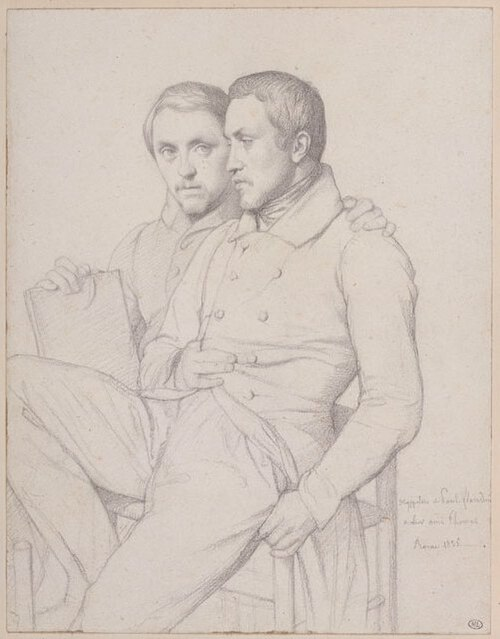
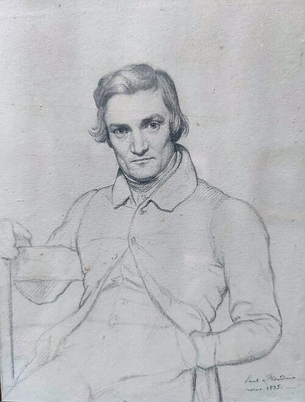


MM. Paul Flandrin, Desgoffes, Chevandier et Teytaud sont les hommes qui se sont imposé la gloire de lutter contre le goût d’une nation.
MM. Paul Flandrin, Desgoffes, Chevandier, and Teytaud are the men who have imposed upon themselves the glory of struggling against the taste of a nation.
J’ignore quelle est l’origine du paysage historique. À coup sûr, ce n’est pas dans Poussin qu’il a pris naissance ; car auprès de ces messieurs, c’est un esprit perverti et débauché.
I do not know the origin of historical landscape. Certainly it did not begin with Poussin; beside these gentlemen, he is a perverted and debauched spirit.
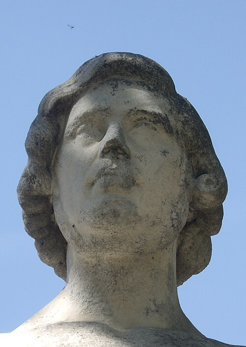
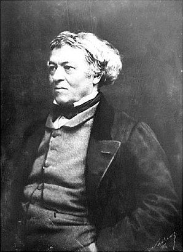
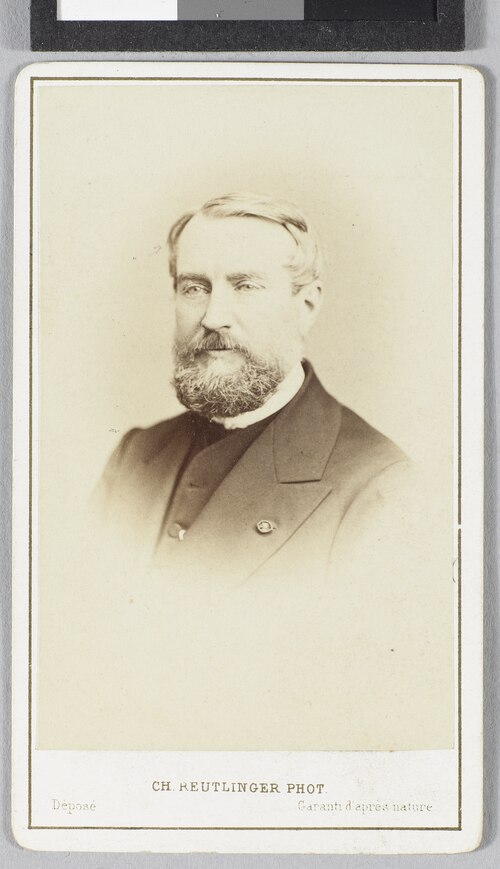
MM. Aligny , Corot et Cabat se préoccupent beaucoup du style. Mais ce qui, chez M. Aligny, est un parti pris violent et philosophique, est chez M. Corot une habitude naïve et une tournure d’esprit naturel. Il n’a malheureusement donné cette année qu’un seul paysage : ce sont des vaches qui viennent boire à une mare dans la forêt de Fontainebleau, M. Corot est plutôt un harmoniste qu’un coloriste ; et ses compositions, toujours dénuées de pédanterie, ont un aspect séduisant par la simplicité même de la couleur. Presque toutes ses œuvres ont le don particulier de l’unité, qui est un des besoins de la mémoire.
MM. Aligny, Corot, and Cabat concern themselves greatly with style. But what in M. Aligny is a violent and philosophical resolve is in M. Corot a naïve habit and a natural cast of mind. Unfortunately he has sent only one landscape this year: cows coming to drink at a pool in the forest of Fontainebleau. M. Corot is more a harmonist than a colorist, and his compositions, always free from pedantry, have a seductive appearance through the very simplicity of their color. Almost all his works possess the peculiar gift of unity, one of the needs of memory.
M. Aligny a fait à l’eau-forte de très-belles vues de Corinthe et d’Athènes ; elles expriment parfaitement bien l’idée préconçue de ces choses. Du reste, ces harmonieux poèmes de pierre allaient très-bien au talent sérieux et idéaliste de M. Aligny, ainsi que la méthode employée pour les traduire.
M. Aligny has made very beautiful etched views of Corinth and Athens; they express perfectly the preconceived idea of those places. Moreover, these harmonious poems of stone were very well suited to M. Aligny’s serious and idealist talent, as was the method employed to translate them.
M. Cabat a complètement abandonné la voie dans laquelle il s’était fait une si grande réputation. Sans être complice des fanfaronnades particulières à certains paysagistes naturalistes, il était autrefois bien plus brillant et bien plus naïf. Il a véritablement tort de ne plus se fier à la nature, comme jadis. C’est un homme d’un trop grand talent pour que toutes ses compositions n’aient pas un caractère spécial ; mais ce jansénisme de nouvelle date, cette diminution de moyens, cette privation volontaire, ne peuvent pas ajouter à sa gloire.
M. Cabat has completely abandoned the path in which he had made so great a reputation. Without sharing the bravado peculiar to certain naturalist landscapists, he was formerly much more brilliant and much more naïve. He is truly wrong no longer to trust nature as he once did. He is too talented a man for all his compositions not to have a special character; but this new-fangled Jansenism, this reduction of means, this voluntary privation, cannot add to his glory.
En général, l’influence ingriste ne peut pas produire de résultats satisfaisants dans le paysage. La ligne et le style ne remplacent pas la lumière, l’ombre, les reflets et l’atmosphère colorante, — toutes choses qui jouent un trop grand rôle dans la poésie de la nature pour qu’elle se soumette à cette méthode.
In general, Ingres’s influence cannot produce satisfactory results in landscape. Line and style do not replace light, shadow, reflections, and colored atmosphere—all things that play too great a role in the poetry of nature for nature to submit to such a method.
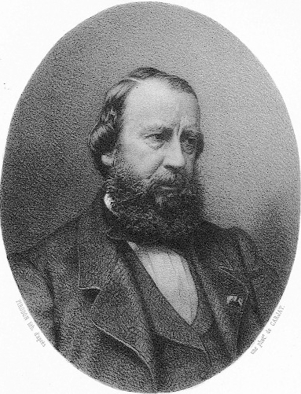
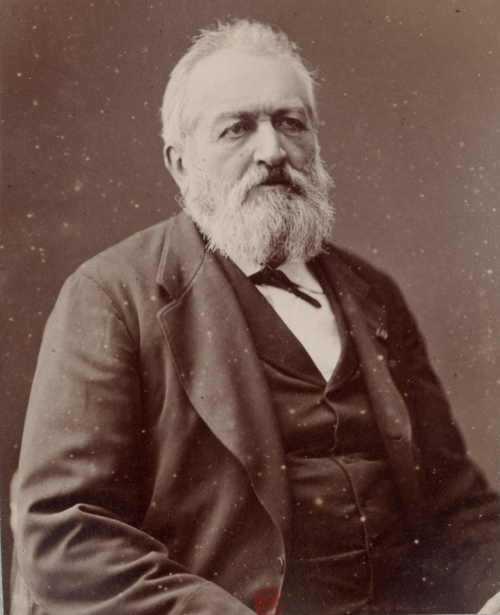
Les partisans contraires, les naturalistes et les coloristes, sont bien plus populaires et ont jeté bien plus d’éclat. Une couleur riche et abondante, des ciels transparents et lumineux, une sincérité particulière qui leur fait accepter tout ce que donne la nature, sont leurs principales qualités : seulement, quelques-uns d’entre eux, comme M. Troyon , se réjouissent trop dans les jeux et les voltiges de leur pinceau. Ces moyens, sus d’avance, appris à grand’peine et monotonement triomphants, intéressent le spectateur quelquefois plus que le paysage lui-même. Il arrive même, en ces cas-là, qu’un élève inattendu, comme M. Charles Le Roux , pousse encore plus loin la sécurité et l’audace ; car il n’est qu’une chose inimitable, qui est la bonhomie.
The opposite party, the naturalists and colorists, are far more popular and have made a much greater display. Rich and abundant color, transparent and luminous skies, and a peculiar sincerity that makes them accept everything nature gives are their chief qualities. Only some of them, like M. Troyon, delight too much in the games and acrobatics of their brush. These procedures, known in advance, learned with difficulty, and monotonously triumphant, sometimes interest the spectator more than the landscape itself. In such cases an unexpected pupil, like M. Charles Le Roux, may carry assurance and audacity still further; for there is only one thing that cannot be imitated, and that is good-natured simplicity.

M. Coignard a fait un grand paysage d’une assez belle tournure, et qui a fort attiré les yeux du public ; — au premier plan, des vaches nombreuses, et, dans le fond, la lisière d’une forêt. Les vaches sont belles et bien peintes, l’ensemble du tableau a un bon aspect ; mais je ne crois pas que ces arbres soient assez vigoureux pour supporter un pareil ciel. Cela fait supposer que si on enlevait les vaches, le paysage deviendrait fort laid.
M. Coignard has made a large landscape of rather handsome effect that greatly attracted the public’s eyes: many cows in the foreground and, in the distance, the edge of a forest. The cows are beautiful and well painted, and the picture as a whole has a good appearance; but I do not think those trees are vigorous enough to support such a sky. This makes one suppose that if the cows were removed, the landscape would become very ugly.
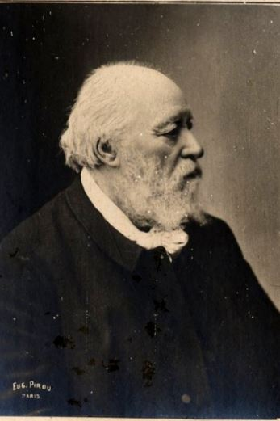
M. Français est un des paysagistes les plus distingués. Il sait étudier la nature et y mêler un parfum romantique de bon aloi. Son Étude de Saint-Cloud est une chose charmante et pleine de goût, sauf les puces de M. Meissonier qui sont une faute de goût. Elles attirent trop l’attention et elles amusent les nigauds. Du reste elles sont faites avec la perfection particulière que cet artiste met dans toutes ces petites choses .
M. Français is one of the most distinguished landscapists. He knows how to study nature and mingle with it a genuine Romantic perfume. His Study at Saint-Cloud is a charming and tasteful thing, except for M. Meissonier’s fleas, which are a fault of taste. They attract too much attention and amuse fools. Still, they are made with the particular perfection this artist brings to all such little things.
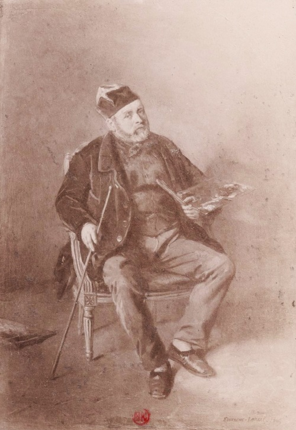
M. Flers n’a malheureusement envoyé que des pastels. Le public et lui y perdent également.
M. Flers has unfortunately sent only pastels. Both the public and he lose by it.

M. Héroult est de ceux que préoccupent surtout la lumière et l’atmosphère. Il sait fort bien exprimer les ciels clairs et souriants et les brumes flottantes, traversées par un rayon de soleil. Il connaît toute cette poésie particulière aux pays du Nord. Mais sa couleur, un peu molle et fluide, sent les habitudes de l’aquarelle, et, s’il a su éviter les crâneries des autres paysagistes, il ne possède pas toujours une fermeté de touche suffisante.
M. Héroult is one of those chiefly preoccupied with light and atmosphere. He knows very well how to express clear, smiling skies and floating mists pierced by a ray of sunlight. He knows all the poetry peculiar to northern countries. But his color, a little soft and fluid, betrays the habits of watercolor; and although he has avoided the swagger of the other landscapists, he does not always possess sufficient firmness of touch.


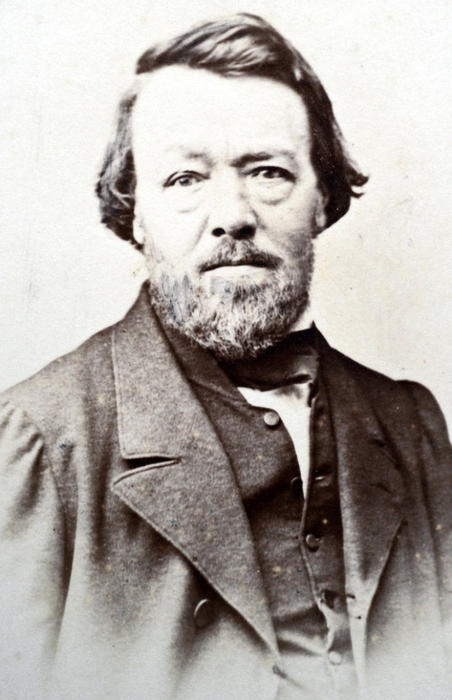
MM. Joyant, Chacaton, Lottier et Borget vont, en général, chercher leurs sujets dans les pays lointains, et leurs tableaux ont le charme des lectures de voyages.
MM. Joyant, Chacaton, Lottier, and Borget generally seek their subjects in distant countries, and their pictures have the charm of travel reading.
Je ne désapprouve pas les spécialités ; mais je ne voudrais pourtant pas qu’on en abusât autant que M. Joyant, qui n’est jamais sorti de la place Saint-Marc et n’a jamais franchi le Lido. Si la spécialité de M. Joyant attire les yeux plus qu’une autre, c’est sans doute à cause de la perfection monotone qu’il y met, et qui est toujours due aux mêmes moyens. Il me semble que M. Joyant n’a jamais pu faire de progrès.
I do not disapprove of specialties; but I would not wish them abused as much as M. Joyant abuses his, for he has never left the Piazza San Marco and never crossed the Lido. If M. Joyant’s specialty attracts the eye more than another, it is doubtless because of the monotonous perfection he puts into it, always produced by the same means. It seems to me that M. Joyant has never been able to progress.
M. Borget a franchi les frontières de la Chine, et nous a montré des paysages mexicains, péruviens et indiens. Sans être un peintre de premier ordre, il a une couleur brillante et facile. Ses tons sont frais et purs. Avec moins d’art, en se préoccupant moins des paysagistes et en peignant plus en voyageur, M. Borget obtiendrait peut-être des résultats plus intéressants.
M. Borget has crossed the frontiers of China and shown us Mexican, Peruvian, and Indian landscapes. Without being a painter of the first rank, he has brilliant, facile color. His tones are fresh and pure. With less art, with less concern for other landscapists and more painting as a traveler, M. Borget might obtain more interesting results.
M. Chacaton, qui s’est voué exclusivement à l’Orient, est depuis longtemps un peintre des plus habiles ; ses tableaux sont gais et souriants. Malheureusement on dirait presque toujours des Decamps et des Marilhat diminués et pâlis.
M. Chacaton, who has devoted himself exclusively to the Orient, has long been a highly skillful painter; his pictures are cheerful and smiling. Unfortunately they almost always look like diminished and faded Decampses and Marilhats.
M. Lottier, au lieu de chercher le gris et la brume des climats chauds, aime à en accuser la crudité et le papillotage ardent. Ces panoramas inondés de soleil sont d’une vérité merveilleusement cruelle. On les dirait faits avec le daguerréotype de la couleur.
M. Lottier, instead of seeking the grayness and mist of hot climates, likes to emphasize their harshness and fiery shimmer. These panoramas flooded with sunlight have a marvelously cruel truth. One would say they were made with a daguerreotype of color.
Il est un homme qui, plus que tous ceux-là, et même que les plus célèbres absents, remplit, à mon sens, les conditions du beau dans le paysage, un homme peu connu de la foule, et que d’anciens échecs et de sourdes tracasseries ont éloigné du Salon. Il serait temps, ce me semble, que M. Rousseau , — on a déjà deviné que c’était de lui que je voulais parler, — se présentât de nouveau devant le public, que d’autres paysagistes ont habitué peu à peu à des aspects nouveaux.
There is one man who, more than all these and even more than the most celebrated absentees, fulfills, in my opinion, the conditions of beauty in landscape: a man little known to the crowd, whom former failures and quiet vexations have kept away from the Salon. It is time, it seems to me, that M. Rousseau—one has already guessed whom I meant—present himself again before a public whom other landscapists have gradually accustomed to new appearances.
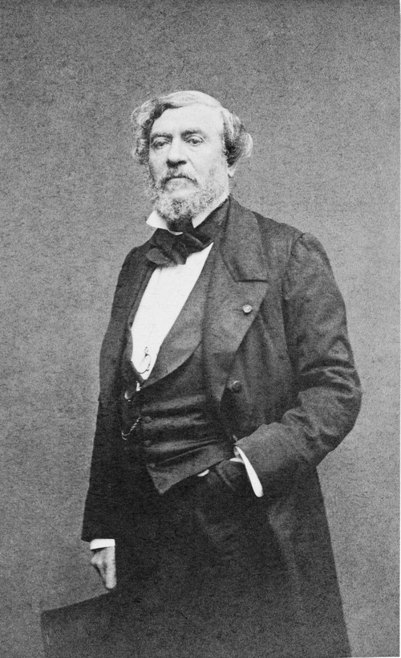
Il est aussi difficile de faire comprendre avec des mots le talent de M. Rousseau que celui de Delacroix, avec lequel il a, du reste, quelques rapports. M. Rousseau est un paysagiste du Nord. Sa peinture respire une grande mélancolie : Il aime les natures bleuâtres, les crépuscules, les couchers de soleil singuliers et trempés d’eau, les gros ombrages où circulent les brises, les grands jeux d’ombres et de lumière. Sa couleur est magnifique, mais non pas éclatante. Ses ciels sont incomparables pour leur mollesse floconneuse. Qu’on se rappelle quelques paysages de Rubens et de Rembrandt, qu’on y mêle quelques souvenirs de peinture anglaise, et qu’on suppose, dominant et réglant tout cela, un amour profond et sérieux de la nature, on pourra peut-être se faire une idée de la magie de ses tableaux. Il y mêle beaucoup de son âme, comme Delacroix ; c’est un naturaliste entraîné sans cesse vers l’idéal.
It is as difficult to make M. Rousseau’s talent understood in words as Delacroix’s, to which it has, moreover, certain affinities. M. Rousseau is a northern landscapist. His painting breathes a great melancholy. He loves bluish natures, twilight, strange sunsets soaked with water, great masses of shade through which breezes circulate, broad plays of shadow and light. His color is magnificent, but not dazzling. His skies are incomparable in their fleecy softness. Recall certain landscapes by Rubens and Rembrandt, mingle with them a few memories of English painting, and suppose that over all this there presides and governs a profound and serious love of nature: one may perhaps form an idea of the magic of his pictures. He mingles much of his soul with them, like Delacroix; he is a naturalist constantly drawn toward the ideal.
M. Gudin compromet de plus en plus sa réputation. À mesure que le public voit de la bonne peinture, il se détache des artistes les plus populaires, s’ils ne peuvent plus lui donner la même quantité de plaisir. M. Gudin rentre pour moi dans la classe des gens qui bouchent leurs plaies avec une chair artificielle, des mauvais chanteurs dont on dit qu’ils sont de grands acteurs, et des peintres poétiques.
M. Gudin compromises his reputation more and more. As the public sees good painting, it detaches itself from the most popular artists if they can no longer give it the same quantity of pleasure. M. Gudin belongs, for me, to the class of people who patch their wounds with artificial flesh, bad singers who are said to be great actors, and poetic painters.
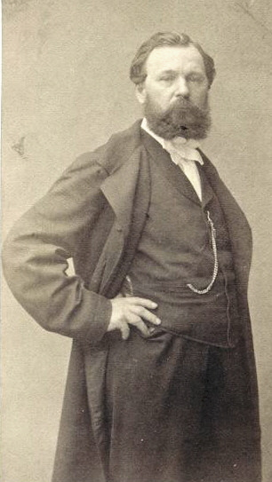
M. Jules Noël a fait une fort belle marine, d’une belle et claire couleur, rayonnante et gaie. Une grande felouque, aux couleurs et aux formes singulières, se repose dans un grand port, où circule et nage toute la lumière de l’Orient. — Peut-être un peu trop de coloriage et pas assez d’unité. — Mais M. Jules Noël a certainement trop de talent pour n’en pas avoir davantage, et il est sans doute de ceux qui s’imposent le progrès journalier. — Du reste, le succès qu’obtient cette toile prouve que, dans tous les genres, le public aujourd’hui est prêt à faire un aimable accueil à tous les noms nouveaux.
M. Jules Noël has made a very beautiful seascape, of fine, clear color, radiant and cheerful. A large felucca, of singular colors and forms, rests in a great harbor where all the light of the Orient circulates and swims. Perhaps a little too much coloring and not enough unity. But M. Jules Noël certainly has too much talent not to acquire more, and he is doubtless among those who impose daily progress upon themselves. Moreover, the success of this canvas proves that in every genre the public today is ready to give a friendly welcome to every new name.
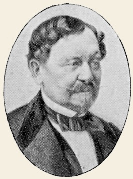
M. Kiorboë est un de ces anciens et fastueux peintres qui savaient si bien décorer ces nobles salles à manger, qu’on se figure pleines de chasseurs affamés et glorieux. La peinture de M. Kiorboë est joyeuse et puissante, sa couleur est facile et harmonieuse. — Le drame du Piége à loup ne se comprend pas assez facilement, peut-être parce que le piége n’est pas tout à fait dans la lumière. Le derrière du chien qui recule en aboyant n’est pas assez vigoureusement peint.
M. Kiörboe is one of those old and sumptuous painters who knew so well how to decorate those noble dining rooms one imagines filled with hungry and glorious hunters. M. Kiörboe’s painting is cheerful and powerful; his color is easy and harmonious. The drama of The Wolf Trap is not understood readily enough, perhaps because the trap is not fully in the light. The hindquarters of the dog backing away and barking are not painted vigorously enough.
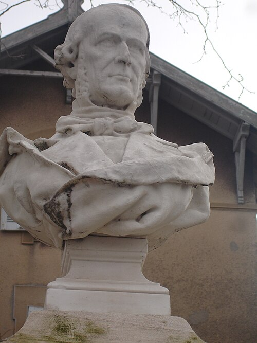
M. Saint-Jean , qui fait, dit-on, les délices et la gloire de la ville de Lyon, n’obtiendra jamais qu’un médiocre succès dans un pays de peintres. Cette minutie excessive est d’une pédanterie insupportable. — Toutes les fois qu’on vous parlera de la naïveté d’un peintre de Lyon, n’y croyez pas. — Depuis longtemps la couleur générale des tableaux de M. Saint-Jean est jaune et pisseuse. On dirait que M. Saint Jean n’a jamais vu de fruits véritables, et qu’il ne s’en soucie pas, parce qu’il les fait très-bien à la mécanique : non seulement les fruits de la nature ont un autre aspect, mais encore ils sont moins finis et moins travaillés que ceux-là.
M. Saint-Jean, who is said to be the delight and glory of the city of Lyon, will never obtain more than mediocre success in a country of painters. This excessive minuteness is unbearably pedantic. Whenever anyone speaks to you of the naïveté of a Lyon painter, do not believe it. For a long time the general color of M. Saint-Jean’s pictures has been yellow and piss-colored. One would say that M. Saint-Jean has never seen real fruit and does not care, because he can manufacture it very well mechanically: not only do the fruits of nature look different, they are also less finished and less worked than these.

Il n’en est pas de même de M. Arondel , dont le mérite principal est une bonhomie réelle. Aussi sa peinture contient-elle quelques défauts évidents ; mais les parties heureuses sont tout à fait bien réussies ; quelques autres sont trop noires, et l’on dirait que l’auteur ne se rend pas compte en peignant de tous les accidents nécessaires du Salon, de la peinture environnante, de l’éloignement du spectateur, et de la modification dans l’effet réciproque des tons causée par la distance. En outre, il ne suffit pas de bien peindre. Tous ces Flamands si célèbres savaient disposer le gibier et le tourmenter longtemps comme on tourmente un modèle ; il fallait trouver des lignes heureuses et des harmonies de tons riches et claires.
It is not so with M. Arondel, whose principal merit is genuine good nature. His painting therefore contains some obvious faults, but the successful passages are entirely successful; some others are too black, and one would say that while painting the author does not take account of all the necessary accidents of the Salon—the surrounding pictures, the spectator’s distance, and the alteration in the reciprocal effect of tones caused by distance. Moreover, it is not enough to paint well. All those celebrated Flemings knew how to arrange game and torment it for a long time as one torments a model; one had to find happy lines and rich, clear harmonies of tone.
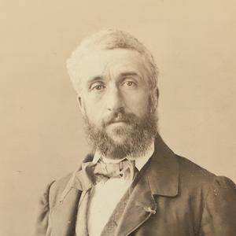
M. P. Rousseau , dont chacun a souvent remarqué les tableaux pleins de couleur et d’éclat, est dans un progrès sérieux. C’était un excellent peintre, il est vrai ; mais maintenant il regarde la nature avec plus d’attention, et il s’applique à rendre les physionomies. J’ai vu dernièrement, chez Durand-Ruel, des canards de M. Rousseau qui étaient d’une beauté merveilleuse, et qui avaient bien les mœurs et les gestes des canards.
M. P. Rousseau, whose pictures full of color and brilliance everyone has often noticed, is making serious progress. He was an excellent painter already; but now he looks at nature more attentively and applies himself to rendering physiognomies. I recently saw, at Durand-Ruel’s, some ducks by M. Rousseau that were marvelously beautiful and truly possessed the manners and gestures of ducks.